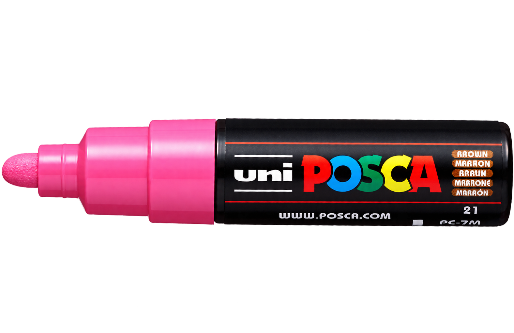

Un color. Tu mano.Todo por crear.

Abrí o cerrá pulgar e índice.Después, apuntá a Listo para confirmar.
También podés mover el deslizador con mouse o dedo.
Se eliminarán todos los trazos del lienzo.